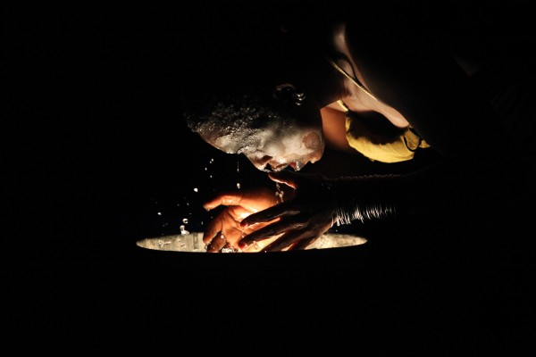

-
Countering Mythology: Nora Chipaumire’s Miriam
by Christine Shan Shan Hou September 21, 2012
In Nora Chipaumire’s Miriam, an unknowable darkness burdens the Brooklyn Academy of Music’s new Fishman’s Space. The stage set, designed by Olivier Clausse and Hecho Mano, looks to slums and shantytowns as points of reference. There are hanging bare light bulbs and a plastic gallon bottle with a leak at the bottom that slowly drips water into a silver basin. A rectangular window panel is suspended in one corner, and portable industrial lights in another. Upon closer inspection, I notice that the lights also take on a sculptural quality — at their base, wires delicately coil around stones like tendrils hugging the foundational support. Three lines of yellow caution tape outline two sides of the square stage. They meet atop a standing ladder while stones weight down their opposing ends.
—–
A loud dripping sound echoes in the background.
A single leg shoots up amidst a heap of black tarp and rubble.
It feels like an abandoned sewer, or a secret hideout turned crime scene.
Most of Miriam occurs in the dark, under Clausse’s dramatic lighting direction. One must lean in to see. One must rely on other senses to fully experience.
—–
The leg flexes its foot and starts to come to life. It’s Chipaumire, slowly and laboriously emerging from the rubble. Something that resembles an anguished birthing scene, or someone coming back from the dead.
“Smile,” Chipaumire loudly whispers, drawing out the i-sound. “Smile. Smile. You should remember to smile,” she says shrilly, in a high-pitched witch-like manner. It is unclear whether she is speaking to herself, the audience, or her counterpart, Okwui Okpokwasili, who sits atop the ladder wearing an intricate, wire-winged accessory, constructed by Malika Mihoubi, and clutching a megaphone.
“Cigarette,” Chipaumire pleads, exaggerating the consonants. Okpokwasili throws a handful of cigarettes at her.
“Light!” she shouts.
Okpokwasili reaches up for a hanging light and points it directly at her face.
—–
Okpokwasili physically towers over Chipaumire. She is part prophet, part predator, part alter ego. She is a menacing presence with her bare, muscular arms and black platform shoes.
“She was a savage and superb, wild-eyed and magnificent,” Okpokwasili blares through the megaphone, quoting Joseph Conrad’s Heart of Darkness. She steps down from the ladder and prowls around the perimeter of the stage.
“Death gnaws as you.”
—–
Chipaumire erupts in a series of shrieks, grunts, and screams, heightening the sense of claustrophobia. Sometimes her groans sound sensual, at others, frightening, as if she were in the midst of being exorcised. She hunches over, body close to the ground, shoulder blades squeezed together, her elbows like knives pointing towards the ceiling.
—–
Together, Chipaumire, along with Okpokwasili, confront stereotypes of the black, African female body as other, as colonized object, as that which is looked at and analyzed.
Born in Mutare, Zimbabwe and currently residing in Brooklyn, Chipaumire looks to Miriam Makeba, both the South African figure and the name itself, as a source of inspiration. She writes:
My Miriam is disobedient, obstinate, rebellious, and beloved…Miriam is a name carried by the mother of Jesus, the sister of Aaron and Moses, as well as the iconic singer and political activist Miriam Makeba.
A sense of counter myth making pervades the black box theater.
—–
In her book, Queering the Color Line (2004), scholar Siobhan B. Somerville writes:
The racial difference of the African body, implied Flower and Murie [in “Account of a Dissection of a Bushwoman” (1867)], was located in its literal excess, a specifically sexual excess that placed her body outside the boundaries of the ‘normal’ female.
Excess pulsates through Chipaumire and Okpokwasili’s gyrating bodies and fierce ululations.
Excess empowers them.
Excess stares back at us.
—–
Omer Sosa’s live score induces an auditory hallucinogenic effect throughout the performance. They include voices, fast-paced drumbeats, a sample of Glen Gould performing Bach’s “Goldberg Variations,” to name a few.
Sound contributes to Miriam’s excess.
Sound contributes to chaos.
—–

Each time she crosses in truth or fiction, she breaks the tracery of delicate glass threads that marks the border. A border is felt in the body as fear and sometimes…no, I cannot speak for her now.
Bhanu Kapil
Humanimal: A Project for Future Children—–
The most powerful performances are the ones that I have the most difficulty putting into words.
Words are a source of light. They introduce a perspective from which to see. Without them there is only memory.
Dear Miriam,
Memory is a dark place.
—–
all photos by Julieta Cervantes, courtesy of BAM